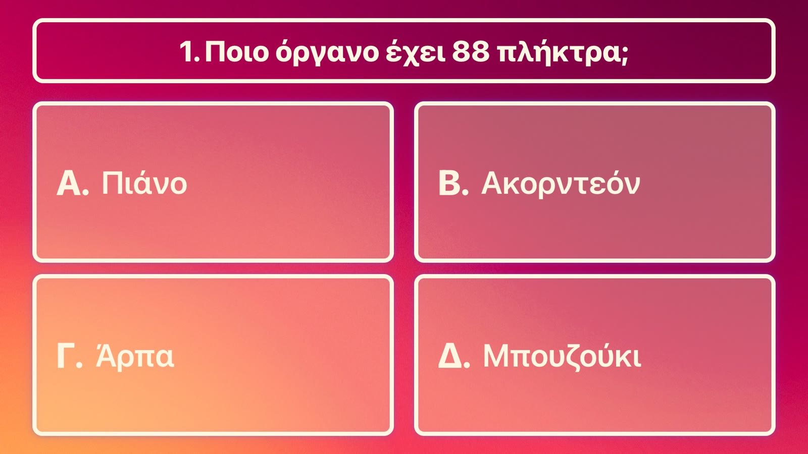
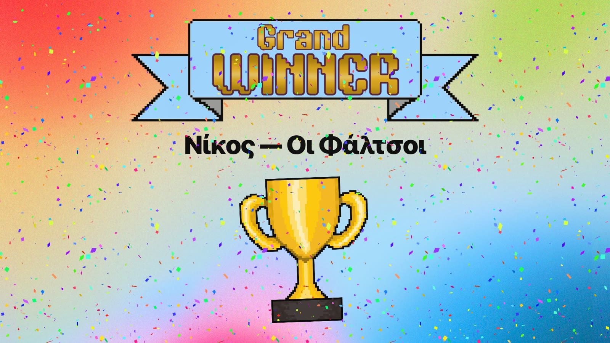

Karaoke Night
A desktop app that runs a live karaoke and music quiz night. The TV shows synced lyrics and game screens, while the host runs everything from any device on the same network.
One-minute walkthrough. Left: the TV display. Right: the control panel at phone size. All names, questions and songs are demo data.
The problem
A karaoke and music quiz night has a lot of moving parts: the singer queue, the song videos, several games, team scores and a final. Running them from separate tabs and files is slow and easy to get wrong in front of a room.
The goal was one app that runs the whole night. It had to be operable by one person from any device while moving around the room, and run from a single laptop driving several TVs.
What it does



Architecture
Control panels
React + MUI. Open on any device. Send intents only, never state.
Server
Node.js, Express, Socket.IO. Validates every event, writes to SQLite and broadcasts the full state.
Display
React, fullscreen on the second screen. Pure function of the state it receives.
The server is the single source of truth. Every action follows the same path: event → validate → write → broadcast. Any number of controls and displays stay in sync, and a client that drops off Wi‑Fi recovers the exact state the moment it reconnects. Electron wraps the server and both windows into one Mac app.
Engineering highlights
-
Word-by-word lyric sync
An LRC parser with per-word timestamps, and a renderer that measures each word's position with the DOM Range API to fill the line smoothly at 60fps. The display corrects video drift against the audio clock, which plays on whichever device owns the speakers.
-
Audio ownership across devices
Exactly one control plays sound at a time. It reports its playback position to the server several times a second, which relays it to the display and to every other phone, so any device can show progress, seek or stop.
-
Spreadsheet sync without dependencies
Questions live in an Excel file. A small xlsx reader (zip and XML parsing with Node built-ins) validates every row, reports errors with sheet and row numbers, and merges by content so rounds already built keep their questions.
-
Built for a live room
The song folder is watched and rescanned automatically. A missing file never cuts a song that is playing. Rounds reset and return to the logo on their own, and the keyboard drives every game.
Source code
The repository is private. I'm happy to walk through the code in an interview.